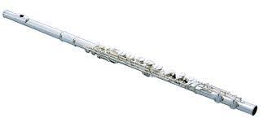
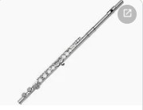
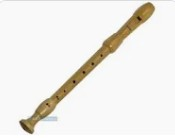
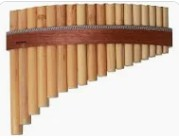

חליל הוא כלי נשיפה.
קיימים סוגים שונים של חלילים, חלקם עם פיית נשיפה הנבלעת בשפתיים, ואחרים, כמו חליל הצד וחליל הרועים עם חור נשיפה, אליה מכוונים את הנשיפה, לעיתים ללא מגע כלשהו של חלקי הפה עם הכלי. ישנם חלילי צד, וחלילים "ישרים". צליל השריקה ברוב סוגי החלילים מופק על ידי יציאת האוויר מחור יציאה בעל שפה ישרה, סמוך למקום כניסת האוויר.
| מספר | משפחת החליל | תמונה |
|---|---|---|
| 1 | חליל צד |  |
| 2 | חלילית |  |
| 3 | חליל פאן |  |
סר ג'יימס גולוויי (באנגלית: James Galway; נולד ב-8 בדצמבר 1939), הוא חלילן אירי המכונה "האיש עם חליל הזהב". הוא אחד החלילנים הראשונים שביסס לעצמו קריירה כסולן. המלכה אליזבת השנייה העניקה לו תואר אבירות ביוני 2001. ביוגרפיה ילדותו גולווי נולד בצפון בלפסט, אירלנד הצפונית, אחד משני אחים. אביו, שניגן בחלילית, הועסק במספנת הארלנד וולף עד סוף מלחמת העולם השנייה, ובילה במשמרות לילה בניקיון אוטובוסים לאחר המלחמה, ואילו אמו, הייתה פסנתרנית, אך עבדה כפועלת במתוויה. הבית בו גדל נפתח ישירות לרחוב, היה בו ברז אחד של מים קרים, וחדרון מגורים קטן ששימש גם מטבח. בגיל תשע בבלפסט החל גולווי לנגן בחלילית פח, כמרבית הילדים הפרוטסטנטים והצטרף לתזמורות מצעדים מסורתית. בגיל אחת עשרה זכה גולווי בתחרות לנגני חליל. הכלי הראשון שלו היה חליל אירי בעל חמישה חורים, ובגיל שתים עשרה או שלוש עשרה הוא קיבל לראשונה חלילית. הוא עזב את בית הספר בגיל ארבע עשרה ועבד כשוליה אצל מתקן פסנתר במשך שנתיים. אביו השקיע את מעט כספו בחלילים ובשיעורים לבנו המוכשר[1]. קריירה מוזיקלית גולווי הגיע ללונדון בגיל צעיר, למד אצל טובי המורים, עבר ללמוד בפריז אצל החלילן ז'אן-פייר רמפל, אך שנא את הנוקשות הפאריסאית וחזר ללונדון לנגן בתזמורת אופראית ובפילהרמונית של לונדון. גולוויי נבחן לפילהרמונית של ברלין בניצוח הרברט פון קאראיין והיה לחלילן הראשי של תזמורת זו משנת 1969 עד 1975. להפתעתו של קאראיין ולמגינת לבו, לאחר פרק זמן של חילוקי דעות מסוימים, החליט "ג'ימי" גולוויי לפרוש ולבנות לו קריירה של סולן, תוכנית שצלחה בידו להפליא. הוא עדיין מופיע בקביעות ונחשב לאחד החלילנים המובילים בעולם[1]. בעבר הוא היה אורח כבוד של הקאמרטה הישראלית ירושלים וכיום הוא מנצח אורח ראשי של נגני מוצרט של לונדון, תזמורת היושבת בקרוידון, דרום לונדון. ג'יימס גולוויי ניגן עם ההרכב זוכה פרס האוסקר בהקלטת הפסקול לטרילוגיה "שר הטבעות", בבימויו של פיטר ג'קסון. חיים אישיים גולווי התחתן שלוש פעמים. מנישואיו הראשונים בצרפת יש לו בן. הוא התחתן עם אשתו השנייה, אנה (אנני) רנגלי, בתו של אדריכל שווייצרי ידוע, בשנת 1972 ועבר מברלין ללוצרן, שווייץ, עיר הולדתה. לזוג נולדו בנות תאומות ובן. בשנת 1978 הקליט עבורה גרסה אינסטרומנטלית לשיר "אנני" של ג'ון דנבר. שהגיע למקום השלישי במצעד הסינגלים בבריטניה. לאחר גירושיהם עבר לגור במגן, שווייץ, כפר ליד לוצרן, שם הוא מתגורר כעת עם אשתו השלישית, ג'ין גולווי ילידת ארצות הברית, לה נישא בשנת 1984. הם מרבים לסייר יחד, מנגנים בדואטים ובנוסף הם מלמדים בכיתות אמן. סר ג'יימס גולוויי (באנגלית: James Galway; נולד ב-8 בדצמבר 1939), הוא חלילן אירי המכונה "האיש עם חליל הזהב". הוא אחד החלילנים הראשונים שביסס לעצמו קריירה כסולן. המלכה אליזבת השנייה העניקה לו תואר אבירות ביוני 2001. ביוגרפיה ילדותו גולווי נולד בצפון בלפסט, אירלנד הצפונית, אחד משני אחים. אביו, שניגן בחלילית, הועסק במספנת הארלנד וולף עד סוף מלחמת העולם השנייה, ובילה במשמרות לילה בניקיון אוטובוסים לאחר המלחמה, ואילו אמו, הייתה פסנתרנית, אך עבדה כפועלת במתוויה. הבית בו גדל נפתח ישירות לרחוב, היה בו ברז אחד של מים קרים, וחדרון מגורים קטן ששימש גם מטבח. בגיל תשע בבלפסט החל גולווי לנגן בחלילית פח, כמרבית הילדים הפרוטסטנטים והצטרף לתזמורות מצעדים מסורתית. בגיל אחת עשרה זכה גולווי בתחרות לנגני חליל. הכלי הראשון שלו היה חליל אירי בעל חמישה חורים, ובגיל שתים עשרה או שלוש עשרה הוא קיבל לראשונה חלילית. הוא עזב את בית הספר בגיל ארבע עשרה ועבד כשוליה אצל מתקן פסנתר במשך שנתיים. אביו השקיע את מעט כספו בחלילים ובשיעורים לבנו המוכשר[1]. קריירה מוזיקלית גולווי הגיע ללונדון בגיל צעיר, למד אצל טובי המורים, עבר ללמוד בפריז אצל החלילן ז'אן-פייר רמפל, אך שנא את הנוקשות הפאריסאית וחזר ללונדון לנגן בתזמורת אופראית ובפילהרמונית של לונדון. גולוויי נבחן לפילהרמונית של ברלין בניצוח הרברט פון קאראיין והיה לחלילן הראשי של תזמורת זו משנת 1969 עד 1975. להפתעתו של קאראיין ולמגינת לבו, לאחר פרק זמן של חילוקי דעות מסוימים, החליט "ג'ימי" גולוויי לפרוש ולבנות לו קריירה של סולן, תוכנית שצלחה בידו להפליא. הוא עדיין מופיע בקביעות ונחשב לאחד החלילנים המובילים בעולם[1]. בעבר הוא היה אורח כבוד של הקאמרטה הישראלית ירושלים וכיום הוא מנצח אורח ראשי של נגני מוצרט של לונדון, תזמורת היושבת בקרוידון, דרום לונדון. ג'יימס גולוויי ניגן עם ההרכב זוכה פרס האוסקר בהקלטת הפסקול לטרילוגיה "שר הטבעות", בבימויו של פיטר ג'קסון. חיים אישיים גולווי התחתן שלוש פעמים. מנישואיו הראשונים בצרפת יש לו בן. הוא התחתן עם אשתו השנייה, אנה (אנני) רנגלי, בתו של אדריכל שווייצרי ידוע, בשנת 1972 ועבר מברלין ללוצרן, שווייץ, עיר הולדתה. לזוג נולדו בנות תאומות ובן. בשנת 1978 הקליט עבורה גרסה אינסטרומנטלית לשיר "אנני" של ג'ון דנבר. שהגיע למקום השלישי במצעד הסינגלים בבריטניה. לאחר גירושיהם עבר לגור במגן, שווייץ, כפר ליד לוצרן, שם הוא מתגורר כעת עם אשתו השלישית, ג'ין גולווי ילידת ארצות הברית, לה נישא בשנת 1984. הם מרבים לסייר יחד, מנגנים בדואטים ובנוסף הם מלמדים בכיתות אמן. סר ג'יימס גולוויי (באנגלית: James Galway; נולד ב-8 בדצמבר 1939), הוא חלילן אירי המכונה "האיש עם חליל הזהב". הוא אחד החלילנים הראשונים שביסס לעצמו קריירה כסולן. המלכה אליזבת השנייה העניקה לו תואר אבירות ביוני 2001. ביוגרפיה ילדותו גולווי נולד בצפון בלפסט, אירלנד הצפונית, אחד משני אחים. אביו, שניגן בחלילית, הועסק במספנת הארלנד וולף עד סוף מלחמת העולם השנייה, ובילה במשמרות לילה בניקיון אוטובוסים לאחר המלחמה, ואילו אמו, הייתה פסנתרנית, אך עבדה כפועלת במתוויה. הבית בו גדל נפתח ישירות לרחוב, היה בו ברז אחד של מים קרים, וחדרון מגורים קטן ששימש גם מטבח. בגיל תשע בבלפסט החל גולווי לנגן בחלילית פח, כמרבית הילדים הפרוטסטנטים והצטרף לתזמורות מצעדים מסורתית. בגיל אחת עשרה זכה גולווי בתחרות לנגני חליל. הכלי הראשון שלו היה חליל אירי בעל חמישה חורים, ובגיל שתים עשרה או שלוש עשרה הוא קיבל לראשונה חלילית. הוא עזב את בית הספר בגיל ארבע עשרה ועבד כשוליה אצל מתקן פסנתר במשך שנתיים. אביו השקיע את מעט כספו בחלילים ובשיעורים לבנו המוכשר[1]. קריירה מוזיקלית גולווי הגיע ללונדון בגיל צעיר, למד אצל טובי המורים, עבר ללמוד בפריז אצל החלילן ז'אן-פייר רמפל, אך שנא את הנוקשות הפאריסאית וחזר ללונדון לנגן בתזמורת אופראית ובפילהרמונית של לונדון. גולוויי נבחן לפילהרמונית של ברלין בניצוח הרברט פון קאראיין והיה לחלילן הראשי של תזמורת זו משנת 1969 עד 1975. להפתעתו של קאראיין ולמגינת לבו, לאחר פרק זמן של חילוקי דעות מסוימים, החליט "ג'ימי" גולוויי לפרוש ולבנות לו קריירה של סולן, תוכנית שצלחה בידו להפליא. הוא עדיין מופיע בקביעות ונחשב לאחד החלילנים המובילים בעולם[1]. בעבר הוא היה אורח כבוד של הקאמרטה הישראלית ירושלים וכיום הוא מנצח אורח ראשי של נגני מוצרט של לונדון, תזמורת היושבת בקרוידון, דרום לונדון. ג'יימס גולוויי ניגן עם ההרכב זוכה פרס האוסקר בהקלטת הפסקול לטרילוגיה "שר הטבעות", בבימויו של פיטר ג'קסון. חיים אישיים גולווי התחתן שלוש פעמים. מנישואיו הראשונים בצרפת יש לו בן. הוא התחתן עם אשתו השנייה, אנה (אנני) רנגלי, בתו של אדריכל שווייצרי ידוע, בשנת 1972 ועבר מברלין ללוצרן, שווייץ, עיר הולדתה. לזוג נולדו בנות תאומות ובן. בשנת 1978 הקליט עבורה גרסה אינסטרומנטלית לשיר "אנני" של ג'ון דנבר. שהגיע למקום השלישי במצעד הסינגלים בבריטניה. לאחר גירושיהם עבר לגור במגן, שווייץ, כפר ליד לוצרן, שם הוא מתגורר כעת עם אשתו השלישית, ג'ין גולווי ילידת ארצות הברית, לה נישא בשנת 1984. הם מרבים לסייר יחד, מנגנים בדואטים ובנוסף הם מלמדים בכיתות אמן.